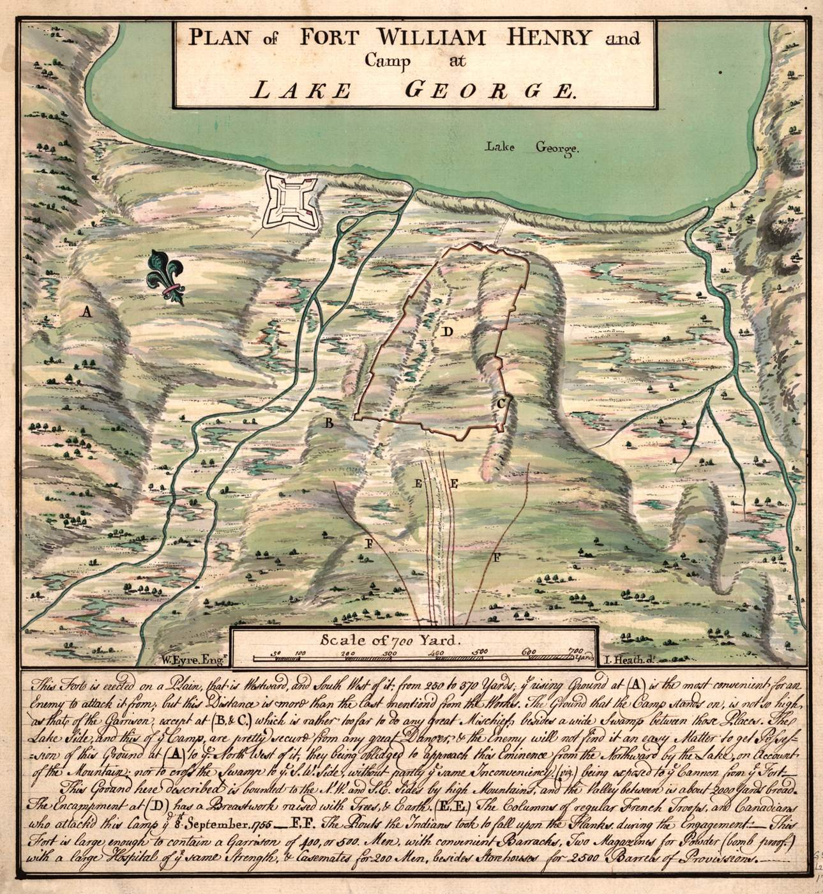
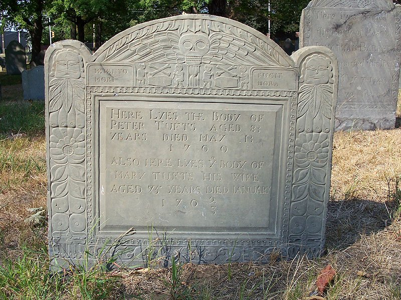
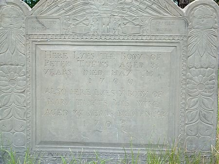
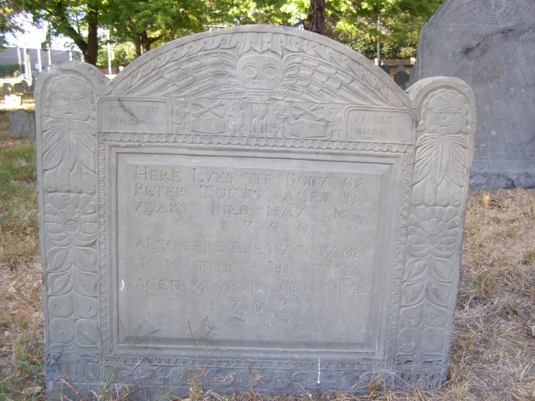
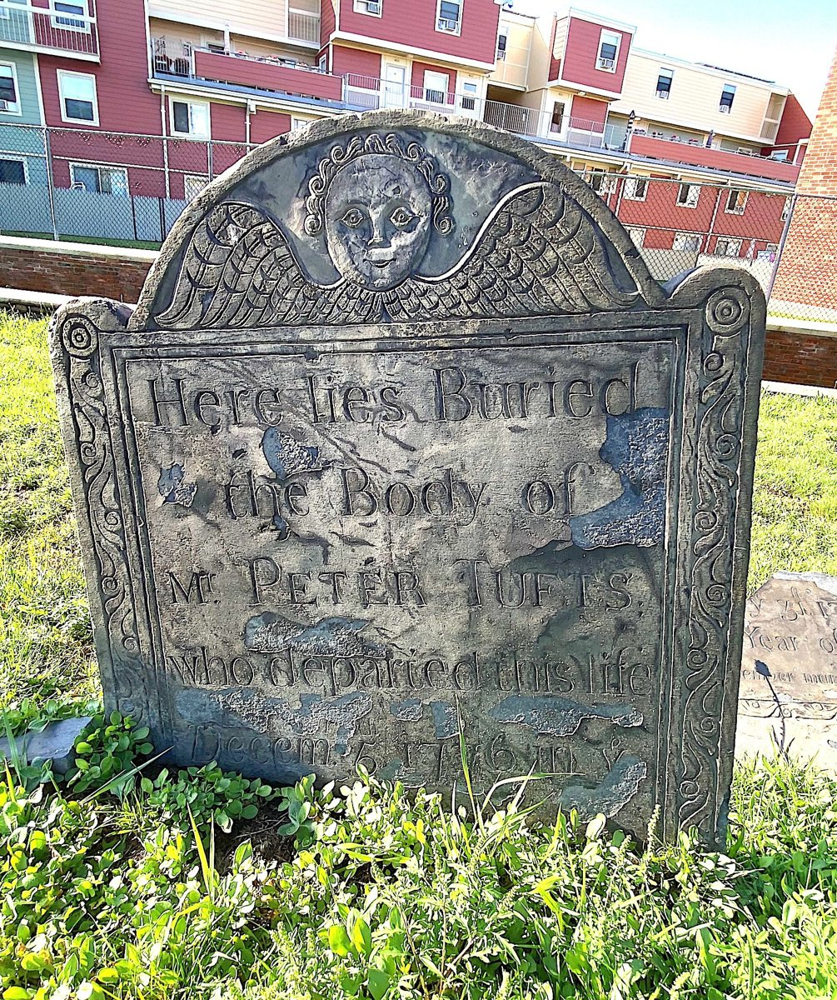

Peter Tufts the Immigrant
The Tufts families of Malden, Medford, and Charlestown descend from a Peter Tufts who came from England about 1638.
“Peter Tufts was a descendant in the fourth generation of another Peter who came over from England about 1638. He was the ancestor of the numerous families of the name in Malden, Medford, and Somerville. … He was born in 1617, probably at or near Malden, England; … He was made a freeman in 1665. His wife's name was Mary. She died in 1703, aged seventy-five. Peter died in 1700. They had nine children, of whom the third son was John, born in 1665.”
Alvin Lincoln Jones, Under Colonial Roofs (1894), p. 128 · page scan

⚑ Unverified
Jones's statement that the immigrant was born “probably at or near Malden, England” is his own hedge. The English origin is not confirmed by a primary record here.
Peter Tufts of Winter Hill (1728–1791)
“This Peter the third is called “of Charlestown,” and was born April 24, 1728. He married Anne Adams of Quincy, a relative of President John Adams.”
Alvin Lincoln Jones, Under Colonial Roofs (1894), p. 129 · page scan

“PETER 37. Son of Peter 36; m. ANN ADAMS [18] April 19, 1750, who d. Feb. 7, 1813, æ. 84, g. s. … d. March 4, 1791, æ. 63, g. s.”
Thomas Bellows Wyman, The Genealogies and Estates of Charlestown, vol. II (1879), p. 965 · page scan

“PETER 36. Son of John 28; housewright; m. LYDIA BUCKNAM, who d. Oct. 31, 1776, in 72d yr., g. s.; d. Dec. 5, 1776, in 80th yr., g. s. Issue.—i. Nathan, b. May 14, 1724. ii. Peter, April 24, 1728.”
Thomas Bellows Wyman, The Genealogies and Estates of Charlestown, vol. II (1879), p. 964 (his parents) · page scan

Anne Adams Tufts
“She was born July 8, 1729, and died February 17, 1813.”
Alvin Lincoln Jones, Under Colonial Roofs (1894), p. 129 · page scan
“Anne Adams Tufts rendered notable service to her country during the Revolutionary War. After the battle of Bunker Hill, she assisted in binding up the wounds of many soldiers who were brought to her house, and later, when part of Burgoyne's army was encamped on Winter Hill, she went to camp and nursed all night the dying wife of one of the prisoners.”
Jay Franklin Tufts, Tufts Family History 1633–1963 (secondary source), p. 28, quoting the Boston Journal, June 22, 1909 · page scan


The 1909 tablet (transcription)
To the Memory of Anne Adams-Tufts / Born 1729 Died 1813 / A heroine of the Revolution who did active patriotic service after the Battle of Bunker Hill. / This was the door-stone of her home which stood about 120 feet south-west of this spot. [The middle digit is worn on the bronze and appears to be 2; some transcriptions read 100.] / This tablet is placed by the Somerville Chapter of the Daughters of the American Revolution which is honored in bearing her name. / 1909
Transcribed from the photograph by Marc Posner, April 8, 2024, HMdb.org (original in capitals). Paul Revere Park, Winter Hill, Somerville.
Discrepancy: the HMdb.org page transcribes the tablet as “Died 1812”; the photograph reads “Died 1813”. The tablet’s 1813 agrees with Wyman and Jones on the year; it does not settle the day (Feb. 7 or Feb. 17).
The Anne Adams Tufts Chapter, DAR
More than eighty years after her death, the women of Somerville chose Anne's name for their new chapter of the Daughters of the American Revolution. A Somerville Board of Trade history records its founding:
“ANNE ADAMS TUFTS CHAPTER, D. A. R., was organized March 10, 1897, approved by the national society January 6, 1898, and charter given February 17, 1899. Its philanthropic work is varied.”
Somerville, Mass.: The Beautiful City of Seven Hills, Its History and Opportunities (Somerville Board of Trade), p. 185, transcription
The chapter's leadership had family ties to Anne herself. Writing in the Somerville Historical Society's journal, the society noted that Sarah Tufts's descendants included
“Mrs. Heald, the regent of the Anne Adams Tufts chapter of the Daughters of the Revolution”
Historic Leaves, vol. 1 (April 1902–January 1903), “The Tufts Family in Somerville,” p. 25, Perseus Digital Library
In 1909 the chapter set a bronze tablet on the door-stone of her old homestead in Paul Revere Park, Winter Hill. The tablet calls the chapter “honored in bearing her name”; its full text is transcribed below.
The chapter was still active in the 1920s. In 1928 a member, Helen Tufts Bailie, made public the national society's lists of “doubtful speakers,” and two other members of the “Anne Adams-Tufts Chapter” signed the protest with her (Jewish Telegraphic Agency report, 1928; Helen Tufts Bailie papers, Smith College, which say she joined the chapter in 1915 and was expelled after the protest). Papers about the chapter survive in the Adams Tufts Magoun family papers at the Newberry Library, Chicago.
⚑ Unverified
The publication year of the Board of Trade history (internal evidence suggests about 1912). Mrs. Heald's full name and term as regent. The chapter's founders, DAR chapter number, and whether it is active today or has merged or disbanded: no source found yet. Note: Pending further work.
⚑ Unverified
Anne's death date: Wyman (p. 965) gives Feb. 7, 1813, and Jones (p. 129) gives February 17, 1813. Her father: Jones says “Anne Adams of Quincy”, and the family history (p. 28) says “the daughter of Joseph Adams of Cambridge”. Her nursing service is known only from a 1909 newspaper account quoted in a secondary source.
The Winter Hill Farm
Tufts association: Home farm of Peter Tufts of Winter Hill, roused by Paul Revere on April 19, 1775. (Alvin Lincoln Jones, Under Colonial Roofs (1894), p. 129)
See Places: Winter Hill.
Illustrations




Find a Grave Memorials
Peter Tufts (the immigrant)
Find a Grave memorial 20180511. As given there (secondary; not checked against original records): Bell Rock Cemetery, Malden, Range 3, Row 11. Inscription as given on the memorial: “Here Lyes the Body of Peter Tufts aged 83 years died May 13 1700.”






Peter Tufts of Winter Hill
Find a Grave memorial 51164324. As given there (secondary; not checked against original records): Born 28 Apr 1728 (a suggestion on the page says 24 Apr); died 4 Mar 1791, aged 62, Charlestown. Phipps Street Burying Ground, plot 1P2. Wife Anne Adams Tufts, m. 1750.


Anne Adams Tufts
Find a Grave memorial 51164318. As given there (secondary; not checked against original records): Born 8 Jul 1729, Cambridge; died 7 Feb 1813, aged 83, Charlestown. Phipps Street Burying Ground, plot 1P1. Parents Lieut. Joseph Adams II and Rachel Allen. (The memorial photo is the Pioneer Mothers portrait already shown above.)
Further Research Links
Outside resources for further research. Secondary and user-contributed sites (blogs, family trees, memorial sites, Wikipedia) are not verified here.
- Battle of Bunker Hill (Wikipedia)
- Full PDF / Medford in the Revolution (1903) – full digitized volume (Internet Archive)
- Anne Adams Tufts; Nurse at the Battle of Bunker Hill (full biographical post) (Tufts Genealogy blog) Secure (https) version listed separately.
- Anne Adams Tufts; Nurse at the Battle of Bunker Hill (full biographical post) (Tufts Genealogy blog)
The Charlestown–Malden Crossing
The ferry history, with the 1775–77 maps and the Alford Street Bridge views, is on Peter Tufts the Immigrant.
Tufts association: Peter Tufts the immigrant succeeded Philip Drinker as ferryman at Charlestown Neck in early 1647. This was the ferry later called the Penny Ferry, superseded in 1787 by Malden Bridge, on the line of today’s Alford Street Bridge. The name “Tufts Landing” is not found in any source checked. (Corey, p. 85 and n. 53; Medford Historical Register, vol. XXI, p. 54)
Sites Today: Street View and Photos
Links open Google Street View or OpenStreetMap in a new page. No Street View imagery is copied onto this site. The photographs are freely licensed and credited below each one.
- Malden Bridge (Alford Street Bridge), Charlestown side. The south (Charlestown) end of Alford Street Bridge, near where the Charlestown–Malden ferry once landed. View on Google Street View · OpenStreetMap (42.3866, -71.0719)
- Malden Bridge (Alford Street Bridge), Everett/Malden side. The north end of the bridge. The land here, once part of Malden, is now Everett. View on Google Street View · OpenStreetMap (42.391, -71.0712)
- Peter Tufts of Winter Hill homestead site. Approximate: Broadway near Central Street, Somerville. Booth (Historic Leaves, vol. 1, p. 21) says the house stood “near the westerly corner of Central street and Broadway, before its removal to Lowell street.” View on Google Street View · OpenStreetMap (42.3936, -71.1035)
- Salem Street Burying Ground, Medford. The burying ground on Salem Street, Medford Square. The Tufts tomb is plot 35. View on Google Street View · OpenStreetMap (42.4181, -71.1076)
- Peter Tufts House, 350 Riverside Ave., Medford. The brick house at 350 Riverside Avenue. View on Google Street View · OpenStreetMap (42.4115, -71.0936)
- Dr. Simon Tufts house site, Medford Square. Approximate: the corner of Main and Forest Streets. Gill (Medford Historical Register, vol. XVIII, p. 54) says the house “was on the corner of Main and Forest streets”; it was taken down in 1867. View on Google Street View · OpenStreetMap (42.4184, -71.1096)
⚑ Unverified
The Winter Hill and Dr. Simon Tufts house coordinates are approximate placements at the street corners the sources name. Neither house survives. The Malden Bridge points mark the two ends of today’s Alford Street Bridge.


Profile: Peter Tufts the Immigrant (c. 1617–1700).